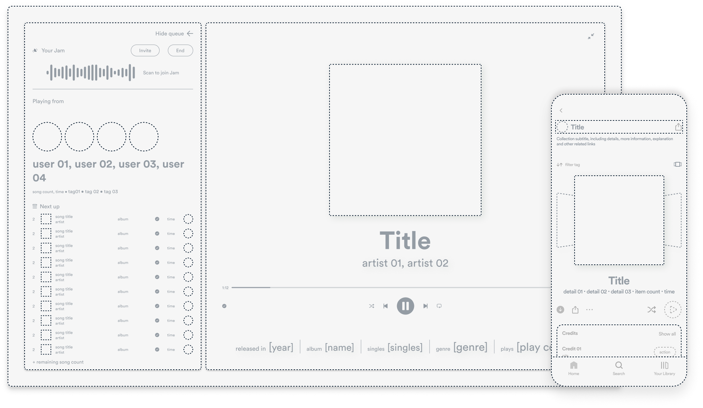
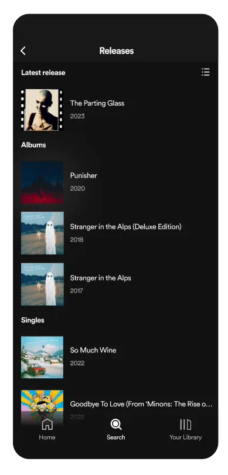
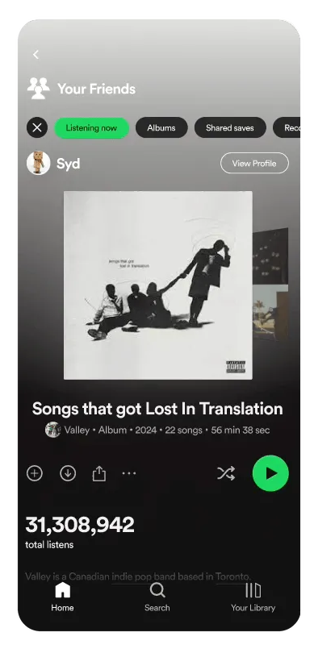
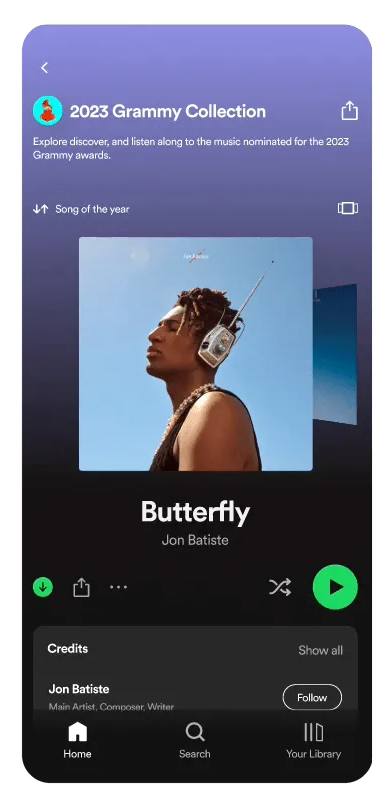
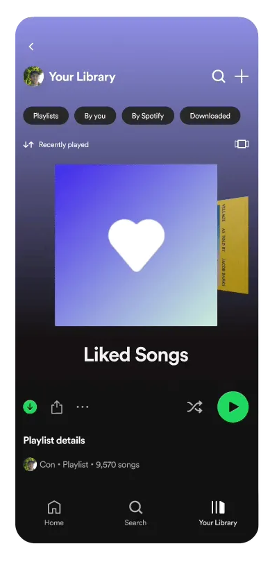
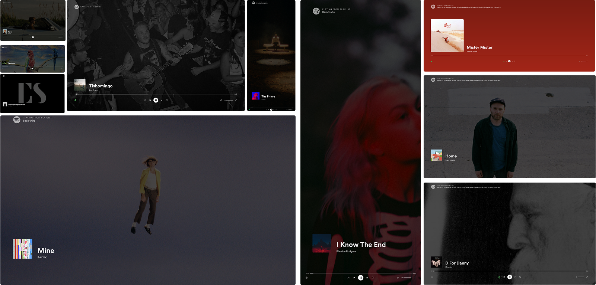
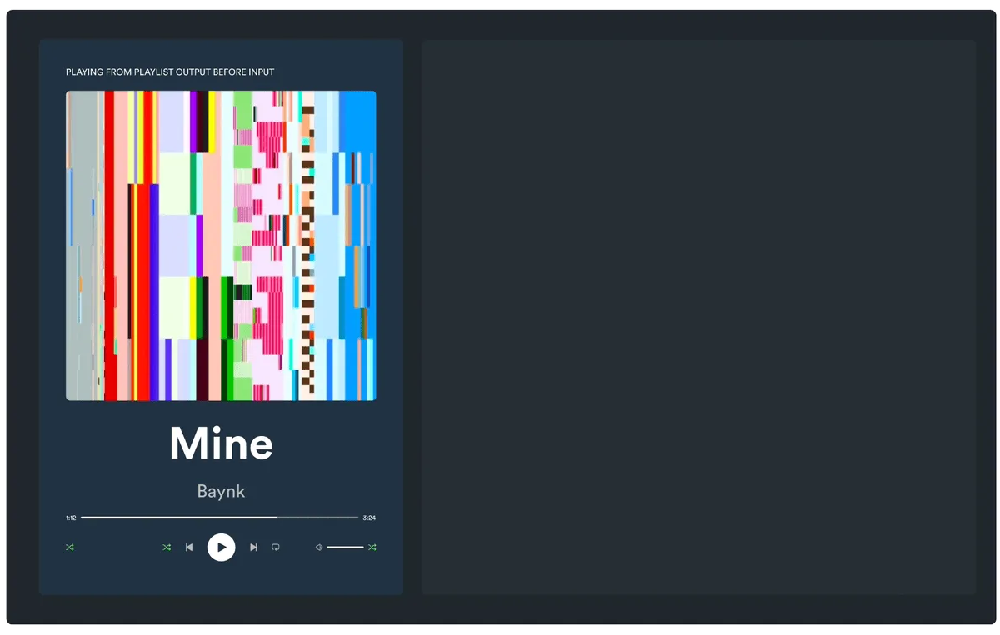

Spotify Dreams
Fixing problems I have with Spotify
I spent minuteswith Spotify in 2024
hours a day
For all it's wonder, I noticed some problems
Problem 1Exploration is unwieldy, and lacks in wonder
Inspired by an oxymoronic habit of collecting vinyl, I sketched out a physical representation of digital records
Making the view scalable


I created a set of components and layouts that adapt to the view
Thought 1
Record Shelf


Friend Activity
A dynamic, social view of what your friends are listening to

Curated Collections
Thumb through what's top of mind for the world

A Visual Library
Playlists, recommendations, collections
Your library, in a new light
Problem 2Spotify's fullscreen design is behind the times

The old fullscreen, left behind after the 2022 redesign
Fullscreen is at parties, dinners & gatherings. It should be:
1. Beautiful
Fullscreen is a center piece
2. Useful
Full screen doesn't limit functionality
3. Understandable
Fullscreen isn't cluttered or overbearing
Sketching
An exploration of what fullscreen should be



When there's nothing being played
Fullscreen let’s listeners
quickly browse their music, their friends, or their recommendations

In Context